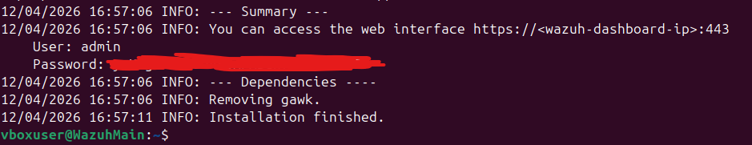
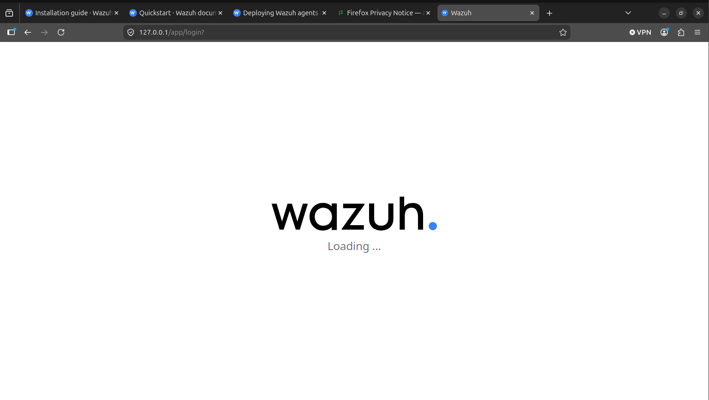

Wazzuh main components :
Tout d'abord, j'ai besoin de savoir de quoi est composé un SOC, quels outils sont utilisés et comment ils sont connectés entre eux. Avant de commencer à construire un SOC, j'ai besoin de concevoir et de dessiner son architecture pour y voir plus clair. J'ai également besoin de déterminer les ressources nécessaires pour faire tourner tout cela. Pour l'instant, je prévois de commencer avec VirtualBox, mais je ne sais pas si mon PC dispose de la RAM nécessaire pour faire fonctionner l'ensemble..
J’ai choisi de faire tourner mon point central sur une VM Ubuntu en y allouant les ressources minimum spécifiées dans la documentation officielle. D’après mes recherches, Ubuntu est un OS idéal pour cette tâche grâce à sa fluidité et flexibilité.
Pour le choix du SIEM, je vais choisir Wazzuh. Il s’agit d’un outil open source, gratuit et simple à mettre en place. L’installation sera effectuée en suivant la documentation officielle (https://documentation.wazuh.com/current/installation-guide/index.html) .
Puisque c’est la première fois que j’utilise Wazzuh, je me contenterais d’installer la version rapide (Pas d’installation manuelle ou personnaliser). Cette méthode installera les 3 composants majeures pour Wazzuh en même temps :
-
Wazzuh Indexer
-
Wazzuh Serveur
-
Wazzuh Dashboard
La commande suivante permet d’installer le script d’installation de Wazzuh et de l’exécuter. Après quelques minutes, l’installation se termine et j’ai accès au Wazzuh dashboard sur mon adresse locale en y accédant par le port 443. Il serait peut être judicieux de changer le port par défaut.
L’installation semble avoir créé un service pour Wazzuh qui se lance à chaque démarrage, il n’est pas nécessaire de le créer manuellement.
curl -sO https://packages.wazuh.com/4.14/wazuh-install.sh && sudo bash ./wazuh-install.sh -a


Remarque : L’installation a planté la première fois que je l’ai lancé. Un message d’erreur apparaissant sur le terminal lors de l’installation du Wazzuh Dashboard sans donner de détails supplémentaires. Les fichiers de logs ne m’ont pas apporté d’informations particulieres pour m’aider à trouver le problème. Cependant, j’ai remarqué que juste avant l’échec, mon OS me notifiait que mon espace disque était faible. Il était donc facile de faire le lien avec l’erreur précédente. Il se trouve que j’avais alloué 25 Gb d’espace pour mon disque. J’ai dû alors allouer 80 Gb et ajuster la taille de la partition directement avec Gparted.